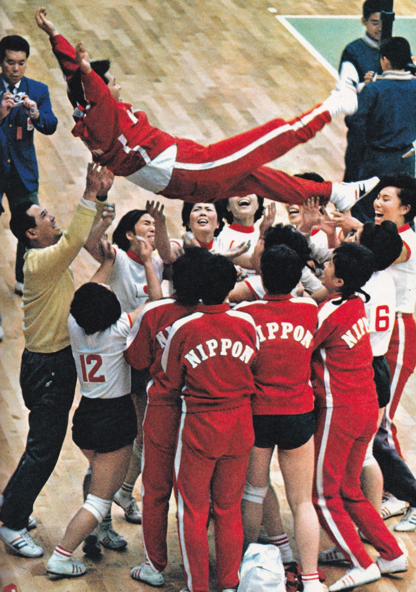
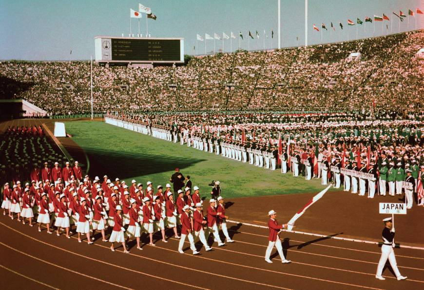

Yoshinori Sakai, the runner who lit the Olympic torch, was born in Hiroshima on August 6 1945, the day the atomic bomb was dropped on the city. A new generation, following WWII, was coming into the world.
Judo and Volleyball were introduced to the Olympics

